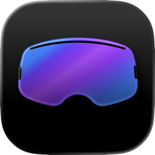
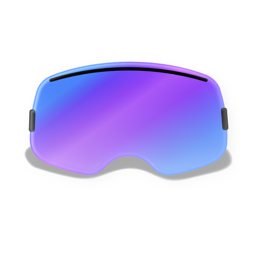

Currently
Seeking a full-time hybrid (NYC) Staff/Principal IC Product Design role.
Balancing the interplay between design, business, and people. Scaling impact through intuitive interfaces, dedicated mentorship, and the ongoing evolution of the creative toolkit.
Two decades steering design for industry-defining brands including The New York Times, BuzzFeed, and Resy (at American Express), scaling products from high-growth startups, to global enterprise platforms, with a consistent focus on craft and usability.
Comfortable owning a large surface area, from first questions to measured outcomes. Turns research into clear direction, then into buildable decisions and shipped product. Stays close after launch to learn what changed and make the next iteration better.
Seeking a full-time hybrid (NYC) Staff/Principal IC Product Design role.
Self
Feb. 2026 - Present
Resy (American Express Global Dining Network)
Feb. 2022 - June 2025
Feb. 2017 - Feb. 2022
Dec. 2016 - Feb. 2017 (Investment fell through)
April 2015 - Sept. 2016
Jan. 2014 - April 2015
Nov. 2007 - Mar. 2012
Nov. 2006 - July 2007
AIQuota for macOS


SendMoi for iOS & MacOS

Hi, I'm John Niedermeyer, a designer in New York.
My work has spanned startups, newsrooms, and fully-scaled platforms, shaping products and brands at the intersection of technology, media, and culture.
Originally from Buffalo, N.Y., I started my career in Boston and have spent most of the past two decades living and working in New York City.
Those experiences taught me to move comfortably between big-picture thinking and close attention to detail.
I care as much about how work gets made as how it turns out. That means asking strong questions early, building shared conviction around a direction, and refining the details that make a product feel coherent.
I value a way of working that is clear, collaborative, and steady from first ideas through launch.